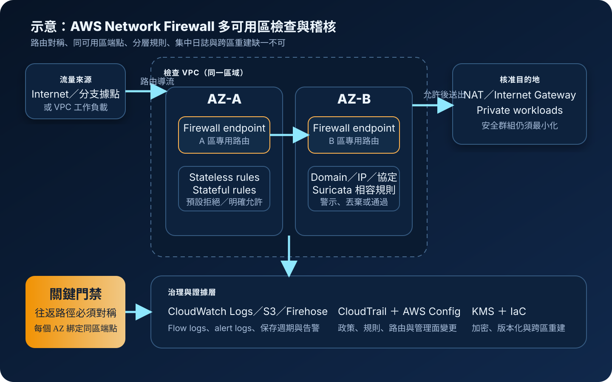

AWS Network Firewall：VPC 流量檢查、規則與路由治理
AWS Network Firewall 是部署在 VPC 邊界的受管網路防火牆，透過每個可用區的防火牆端點、路由表、無狀態與有狀態規則檢查流量。服務可降低自建防火牆叢集的維運負擔，但安全成果仍取決於對稱路由、規則品質、網路分段、日誌、身分治理與復原設計。
作者：Dr. William｜查閱與發布：2026-10-26
服務定位
AWS Network Firewall 是 VPC 的受管式網路流量檢查服務。建立防火牆時，服務會在選定的各個可用區建立防火牆端點；管理者再透過 VPC 路由表把網際網路出口、入口、東西向、Transit Gateway 或其他受支援路徑的流量導向端點。
它適合需要集中執行 IP、連接埠、協定、網域與深度封包檢查規則，並希望由 AWS 管理底層擴展及基礎設施的環境。若需求只是在單一工作負載限制來源與目的，安全群組通常更直接；若需求是保護 HTTP／HTTPS 應用層請求，應使用 AWS WAF；若需要完整第三方安全設備功能、特定代理能力或未受支援的檢查模式，則應比較 Gateway Load Balancer 與合作夥伴設備。
核心概念與服務邊界
檢查元件
- Firewall：部署於指定 VPC 與可用區子網路的受管防火牆資源，每個選定可用區建立一個 endpoint。
- Firewall endpoint：路由表可指向的檢查目標；流量應優先送到同一可用區的端點，減少跨區費用與故障耦合。
- Firewall policy：組合無狀態規則群組、有狀態規則群組、預設動作及其他檢查行為。
- Stateless rules：逐封包比對來源、目的、連接埠與協定，可直接通過、丟棄或轉交有狀態引擎。
- Stateful rules：追蹤連線狀態，可使用標準規則或 Suricata 相容規則描述網域、協定與更細緻條件。
- Rule group capacity：規則群組具有容量配置，設計時要預留變更空間並管理配額。
路由、記錄與治理
- 對稱路由：同一連線的往返流量必須經過一致的有狀態檢查路徑，否則可能被丟棄或繞過。
- Firewall subnet：通常使用專用子網路承載 endpoint，不在其中放置一般工作負載。
- Flow logs：記錄通過有狀態引擎的網路流量資訊，用於調查與基準分析。
- Alert logs：記錄符合警示規則的流量，支援威脅監控與規則調校。
- CloudTrail：記錄防火牆、政策與規則群組等控制面 API 活動。
- 區域邊界：防火牆與端點是區域資源；跨區持續服務需要第二區域的網路、規則、日誌及切換流程。
適合與不適合的使用情境
適合
- 多個 VPC 或帳號需要一致的網際網路出口過濾、惡意網域阻擋與集中稽核。
- 需要檢查從 Internet Gateway、NAT Gateway、Transit Gateway 或其他 VPC 路徑進出的指定流量。
- 組織希望管理 Suricata 相容規則、自訂規則或受管規則群組，並保留變更與警示證據。
- 工作負載橫跨多個可用區，需要每區建立 endpoint 並透過路由控制故障邊界。
- 雲端平台團隊需要以 IaC、版本控制與集中治理維護防火牆政策。
不適合或不能單獨完成
- 只需要限制 EC2、RDS 或負載平衡器的來源與連接埠，卻不需要深度檢查；安全群組可能更簡單。
- 把 Network Firewall 當成 Web 應用防火牆，期待它理解登入、Cookie、SQL injection 或應用交易脈絡。
- 沒有能力管理 VPC 路由、Transit Gateway 路由與回程路徑，無法持續驗證流量確實經過檢查。
- 需要使用者身分或裝置健康狀態作為每次應用存取條件；應比較 Verified Access 或其他零信任方案。
- 要求單一區域防火牆自動提供跨區災難復原；第二區域仍須另行建立與測試。
示意故事案例：多帳號平台的受控網際網路出口
以下為示意案例，不代表特定企業或正式部署。 一家軟體公司有開發、測試與正式環境，多個 VPC 透過 Transit Gateway 集中連線。各團隊原本自行建立 NAT Gateway 與出口規則，造成允許清單、日誌保存及惡意網域封鎖方式不一致。
平台團隊建立專用 inspection VPC，在兩個可用區各配置 firewall subnet、AWS Network Firewall endpoint 與對應路由。工作負載的出口流量先經 Transit Gateway 送入同可用區端點，通過無狀態預篩選及有狀態規則後，才前往 NAT Gateway 與 Internet Gateway。回程路徑依相同連線方向經過檢查，避免非對稱路由。
防火牆政策採預設拒絕與明確允許，規則變更由版本控制及同儕覆核管理。管理操作使用 IAM 最小權限、MFA 與短期憑證；需要的應用機密存於 Secrets Manager 或 Parameter Store。警示與流量日誌送往集中式帳號，以 KMS 保護、CloudWatch 告警並與 CloudTrail 事件關聯。第二區域保留 IaC、規則版本與復原路由，定期演練切換。

建置與運作流程
- 盤點流量：列出來源、目的、協定、連接埠、網域、資料分類、信任區、尖峰吞吐、RTO、RPO 與目前路由。
- 選擇架構：決定分散式或集中式 inspection VPC，確認 Internet Gateway、NAT Gateway、Transit Gateway 與工作負載的相對位置。
- 規劃可用區：為每個承載流量的可用區建立專用 firewall subnet，避免把一般資源放入該子網路。
- 建立政策：定義無狀態預設動作、規則群組、有狀態規則順序、拒絕策略與例外期限。
- 建立防火牆：在目標 VPC 選定各可用區子網路，取得每區 endpoint 並確認狀態可用。
- 修改路由：讓受保護流量在同一可用區經過 endpoint；為入口、出口與回程分別驗證路由表。
- 封鎖旁路：移除不必要的直接 Internet Gateway、NAT、VPC peering、VPN 或 Transit Gateway 路徑。
- 保護管理面：政策、規則、路由、日誌與 KMS 採 IAM 最小權限、MFA、短期憑證、職責分離與變更審批。
- 管理機密：應用 credential 使用 Secrets Manager 或 Parameter Store；不得放入防火牆規則、標籤、日誌或 IaC 參數明文。
- 啟用記錄：依調查需求設定 flow 與 alert logs，送往 CloudWatch Logs、S3 或 Data Firehose，並啟用 CloudTrail。
- 建立監控：對丟棄率、警示類型、日誌中斷、規則變更、endpoint 狀態與路由漂移設定告警。
- 執行測試：驗證允許、拒絕、網域規則、協定例外、回程路由、單一可用區故障與規則回復。
- 準備復原：以 IaC 保存網路、政策、規則與日誌設定，在第二區域建立可重建、可切換、可驗證的流程。
成本、可用性與維運考量
Network Firewall 的主要成本通常包含每個防火牆 endpoint 的運作時間與處理資料量；架構還可能產生 NAT Gateway、Transit Gateway、跨可用區資料傳輸、CloudWatch Logs、S3、Data Firehose、CloudTrail 與 KMS 費用。規則數量不是唯一成本來源，繞路、重複檢查、跨區傳輸與大量日誌也可能顯著增加支出。正式估算應使用當期官方定價與實際流量模型。
服務會管理防火牆基礎設施的擴展，但高可用性仍須由網路架構配合。每個承載流量的可用區應有 endpoint，並讓該區工作負載走同區端點；若全部流量集中到單一可用區，該區故障、跨區費用與路由複雜度都會放大。端點可用不代表 NAT Gateway、Transit Gateway、DNS、應用或資料層已完成多可用區設計。
維運重點包含規則誤擋、規則陰影、容量不足、路由漂移、非對稱流量、日誌量與告警疲勞。規則應有擁有者、用途、到期日、測試、版本與回復程序；先在測試路徑或警示模式觀察，再分階段執行阻擋。
Network Firewall 特有資安風險與控制
- 路由繞過：以路由盤點、AWS Config、自動化測試與流量驗證確認所有指定路徑確實經過 endpoint。
- 非對稱路由：設計一致的往返路徑，特別檢查 NAT、Transit Gateway、Internet Gateway 與多網卡工作負載。
- 跨可用區集中：每個使用中的可用區配置 endpoint，讓流量優先走同區端點。
- 規則過度寬鬆：從預設拒絕與最小允許開始，限制來源、目的、協定、連接埠與必要網域。
- 無狀態預設動作錯誤：清楚決定封包是通過、丟棄或轉交有狀態引擎，避免不必要的旁路。
- 規則順序與陰影：使用測試案例驗證優先順序，避免前方廣泛規則讓後方精細規則永遠無法命中。
- 網域規則被高估：網域封鎖不等於完整內容安全；加密流量、直接 IP、替代 DNS 與應用層行為仍需其他控制。
- TLS 檢查治理不足：若啟用 TLS inspection，應管理憑證信任、私鑰保護、例外、隱私、效能與失敗回退。
- 缺少網路分段：防火牆不取代安全群組與網路 ACL；工作負載之間仍採最小必要連線。
- 公開存取未收斂：公開 IP、Internet Gateway 路由與負載平衡器來源應逐一盤點，避免防火牆外的直接入口。
- 日誌中斷或未告警：監控 flow／alert logs 的交付、延遲與權限，對異常拒絕率與高風險規則命中告警。
- 日誌含敏感資訊：限制欄位、查詢權限與保存週期，依需求以 KMS 保護日誌目的地。
- 管理權限過大：分離 firewall、policy、rule group、route、KMS 與 log destination 權限，使用 MFA 與短期憑證。
- 機密寫入設定：credential、Access Key、Secret Key、Token、密碼與 cookie 不得出現在規則、註解、標籤、日誌或 IaC。
- 跨區僅複製規則：第二區域還需網路、端點、路由、NAT、Transit Gateway、日誌與應用資料，並執行切換演練。
共同責任邊界
AWS 負責 Network Firewall 受管服務、底層基礎設施、防火牆引擎平台與服務端擴展的安全。客戶負責 VPC 與子網路設計、endpoint 可用區配置、路由、firewall policy、rule groups、預設動作、TLS 檢查設定、日誌目的地、IAM、KMS、規則測試、旁路封鎖、應用安全與跨區復原。
通過防火牆不代表工作負載可信。安全群組、網路 ACL、IAM 最小權限、MFA、短期憑證、作業系統修補、端點防護、應用授權與資料加密仍須獨立落實。應用機密使用 Secrets Manager 或 Parameter Store；資料、備份與日誌依分類使用 KMS。備份應涵蓋 IaC、規則版本、設定與調查證據，並驗證第二區域能在 RTO／RPO 內重建。
上線與維運可執行檢查清單
- □ 已確認需要網路層深度檢查，而不是只用安全群組、AWS WAF 或 Verified Access。
- □ 已盤點來源、目的、協定、連接埠、網域、資料分類、吞吐、RTO 與 RPO。
- □ 每個承載流量的可用區都有專用 firewall subnet 與 endpoint。
- □ 流量優先走同一可用區 endpoint，未無故產生跨區繞送。
- □ 入口、出口與回程路由已逐條驗證，連線往返保持對稱。
- □ 已移除不必要的 IGW、NAT、Transit Gateway、VPN、peering 或公開 IP 旁路。
- □ 無狀態預設動作與轉交有狀態引擎的條件已明確測試。
- □ 有狀態規則採最小允許，具擁有者、用途、到期日、版本與回復程序。
- □ 規則順序、陰影、容量與配額已用正向及反向案例驗證。
- □ 若使用 TLS inspection，已完成憑證、私鑰、隱私、效能與失敗回退治理。
- □ 安全群組與網路 ACL 仍採最小必要連線，未把防火牆當成唯一控制。
- □ 公開入口、負載平衡器與工作負載公開 IP 均已盤點及限制。
- □ 管理操作採 IAM 最小權限、MFA、短期憑證、職責分離與變更審批。
- □ 應用機密使用 Secrets Manager 或 Parameter Store，未寫入規則、標籤或日誌。
- □ Flow logs、alert logs 與 CloudTrail 已集中保存，目的地依需求使用 KMS。
- □ 已對日誌中斷、拒絕暴增、高風險命中、規則與路由變更設定 CloudWatch 告警。
- □ 已估算 endpoint 時數、處理流量、NAT、Transit Gateway、跨區傳輸、日誌與 KMS 成本。
- □ 已測試單一可用區故障、endpoint 異常、規則回復與路由回復。
- □ 第二區域可由 IaC 重建防火牆、政策、規則、路由、日誌與監控。
- □ 備份與復原演練符合 RTO／RPO，且包含規則版本與稽核證據。
- □ 正式內容不含 credential、Access Key、Secret Key、Token、密碼或 cookie。
AWS 官方一手來源
- What is AWS Network Firewall?（查閱：2026-10-26）
- How AWS Network Firewall works（查閱：2026-10-26）
- Architecture with an internet gateway and a NAT gateway（查閱：2026-10-26）
- Firewall policies in AWS Network Firewall（查閱：2026-10-26）
- Rule groups in AWS Network Firewall（查閱：2026-10-26）
- Suricata compatible IPS rules（查閱：2026-10-26）
- Logging AWS Network Firewall activity（查閱：2026-10-26）
- Security in AWS Network Firewall（查閱：2026-10-26）
- Resilience in AWS Network Firewall（查閱：2026-10-26）
- AWS Network Firewall pricing（查閱：2026-10-26）
- AWS Shared Responsibility Model（查閱：2026-10-26）
內容說明
本文依查閱日可用的 AWS 官方文件整理，作為基礎學習與架構討論材料；實際部署仍須依最新區域支援、規則引擎、TLS inspection 能力、路由模式、配額、定價、資料分類、法規與故障演練結果調整。